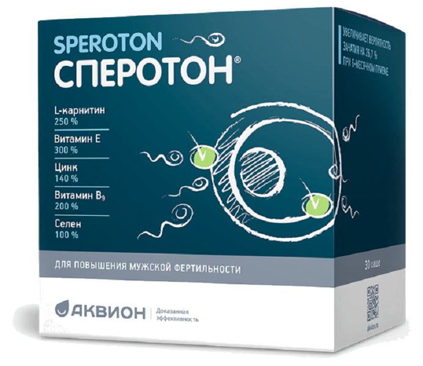
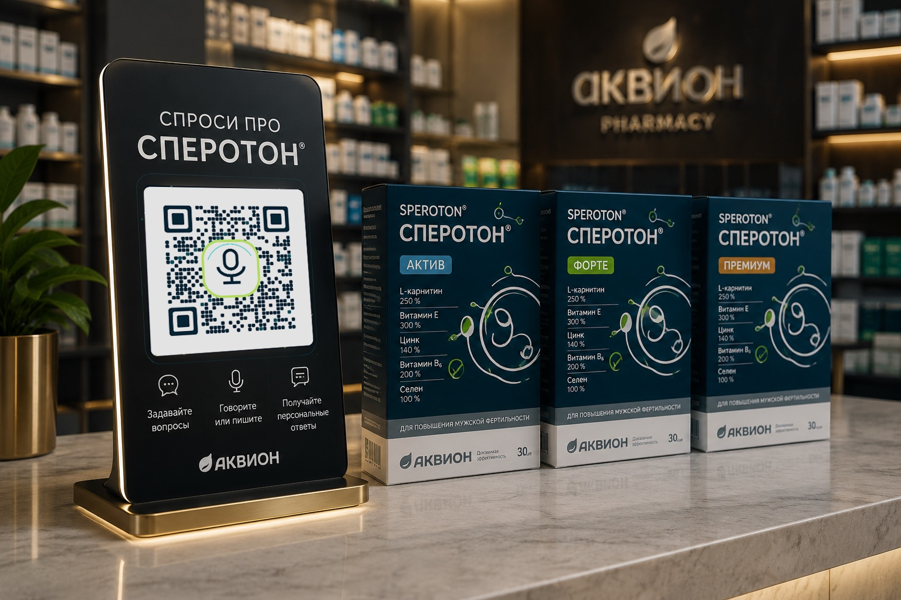

Продажи
Лучше объясняет сложные продукты. Помогает сравнивать и выбирать. Создаёт возможности для кросс-продаж и повторных покупок.
Для компании «Аквион» · AI-ассистент продукта
Подготовлено специально для компании «Аквион»
Покупатель сканирует QR-код на упаковке или POS-материале – и мгновенно получает персонального AI-консультанта, который знает о продукте всё.
Упаковка становится цифровым каналом

АКВИОН
Нажмите и говорите
Спросите о Сперотоне
БАД · не является лекарством
Проблема
Покупатель стоит перед полкой и принимает решение за несколько минут. Ответить на его вопросы в этот момент некому:
Покупатель остаётся один на один с вопросами. А что, если продукт ответит сам?
Эволюция упаковки и POS
Из статичного рекламного носителя – в умный, интерактивный и измеряемый канал коммуникации.
AI Product Layer
QR – только вход. Мы создаём единый цифровой интеллект бренда, который сопровождает покупателя везде, где тот встречает продукт.
Что получает покупатель
До покупки не нужно изучать состав мелким шрифтом и сравнивать вслепую – можно просто задать вопрос:
После покупки ассистент остаётся рядом: он открывается с той же упаковки в любой момент. Не человек ищет информацию о продукте – продукт сам отвечает человеку.
Ассистент работает только в рамках утверждённой производителем базы знаний и заданных правил коммуникации. Он объясняет и сравнивает, но не назначает продукт и не подменяет врача.
Что получает компания
Лучше объясняет сложные продукты. Помогает сравнивать и выбирать. Создаёт возможности для кросс-продаж и повторных покупок.
24/7. Единое качество консультации. Тысячи одновременных диалогов. Снижение количества типовых вопросов.
Новый интерактивный канал коммуникации. Контент и сценарии можно менять без перепечатки упаковки и POS-материалов.
Каждый диалог превращается в данные о вопросах, потребностях, сомнениях и поведении покупателей.
Физический контакт покупателя с продуктом впервые становится измеряемым.
Исследование рынка
Сегодня производитель почти ничего не знает о человеке, который взял упаковку с полки. AI-слой позволяет увидеть:
Дополнительно – допустимые агрегированные данные: география, язык, устройства, время и точки контакта. Каждый разговор превращается в данные.
Портрет аудитории
AI помогает понять не только кто покупатель и что ему нужно, но и на каком этапе решения он находится. Рассказывает он это сам – в обмен на подбор, бонус или программу лояльности, не анкетой, а в разговоре.
Возрастная группа, регион, новый или постоянный, выбирает для себя или для другого.
Цель выбора, ожидаемый результат, важные характеристики, возникающие вопросы.
Что рассматривает и сравнивает, что влияет на решение, где предпочитает покупать.
Первое знакомство или повторная покупка, что уже использовал, интерес к другим продуктам.
Этап покупательского пути
Дополнительные данные – только добровольно и с согласия пользователя. Не персональные досье, а карта потребностей и покупательского поведения.
AI Insight Engine
AI Insight Engine автоматически превращает тысячи разговоров покупателей в конкретные рекомендации для бизнеса.
Инсайт → действиецифры условные – так выглядят готовые выводы
покупателей продукта A спрашивают о продукте B.
→ обнаружена возможность кросс-продажи
перед покупкой продукта C – вопрос о X.
→ маркетинг получает задачу изменить коммуникацию
покупатели регулярно сравнивают эти продукты.
→ основание создать сценарий сравнения
вопросов не покрыты существующей базой знаний.
→ продуктовая команда знает, что дополнить

Живое демо
Пилот · 2–3 продукта
Технология уже существует в виде рабочего прототипа. Следующий этап – вывести её на реальные продукты и проверить на реальных покупателях. За месяц реализуем:
Прототип уже создан. Пилот – проверка технологии на рынке.
Результат пилота
Стоимость пилота1 000 000 ₽
Финальный состав пилота фиксируется совместно после выбора продуктов и сценариев тестирования.
Критерии успеха: люди пользуются? · компания получает ценность? · есть основания масштабировать?
Сегодня компания продаёт миллионы упаковок. Завтра каждая из них сможет разговаривать с покупателем.
Один интеллект бренда. Миллионы персональных диалогов.
PLAYDISPLAY · Андрей Судариков · a.sudarikov@playdisplay.ru